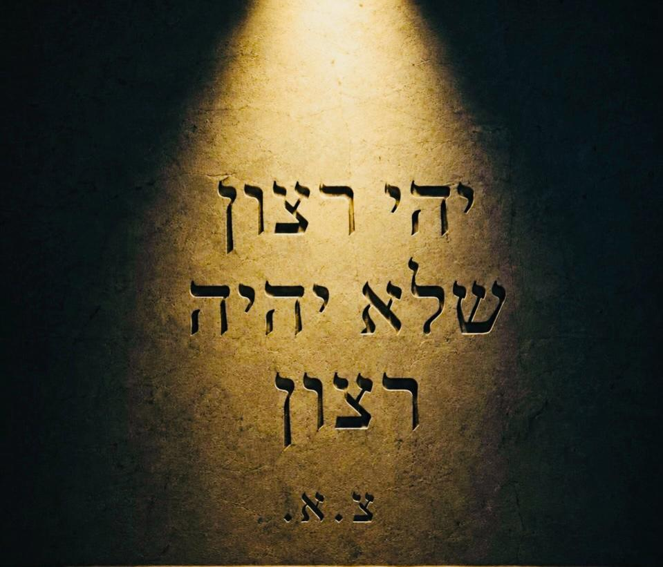

העין היא מצלמה של המחשבות
הרצון העצמי יושב בלב, והוא בלתי רצוני: הוא מעלה לנו הרבה מחשבות לראש, וכולן נגועות ברצון עצמי. וכאשר אדם מסתכל על עולם של שקר מתוך רצון עצמי - הכל נראה לו הפוך ממה שהוא רוצה. וכך מתחילה מלחמת הצדק: במחשבה, ומשם היא עוברת לדיבור. וזו המלכודת של היצר.
כי העין היא מצלמה של המחשבות. אדם שחושב על עצמו לעולם יראה היפך הטוב, במציאות שכולה הפכים. ורק אדם שמבטל את רצונו יכול להתעלם מן הרע ולהפקיר את הכל בידי שמים - ואז הוא רואה שיש מלך בבירה, והמלך יודע להביא מתוק ממר, טוב מרע, ואור מחושך. נמצא שעד שאדם לא מבטל את רצונו - לא יראה את רצון השם.
בגלות, הלב נתון לצד שמאל שבלב - מקום הסטרא אחרא. ועל ידי הליכה נגד הרצון למען השם, השליטה עוברת לצד ימין שבלב, ואז נגלה לנו עולם של חסד: שם השם מהווה מציאות ליראיו בכל רגע, תמיד. ושם הדין הופך לחסד - כי המלכנו את החסד על הדין.
כל זמן שהרצון העצמי שולט, המציאות תיראה הפוכה ותתחיל מלחמת צדק.
וכשהוא מתבטל - מתגלה שיש מלך בבירה, ושהכל חסד.
* דברי פנימיות. ״מלך בבירה״ - על פי מדרש בראשית רבה לט, א (אברהם אבינו והבירה הדולקת) · צד שמאל שבלב כמקום היצר - על פי ברכות סא ע״א ותניא פרק ט · מתוק ממר, אור מחושך - על דרך הקבלה והחסידות. הלימוד למעשה - בהדרכת רב.